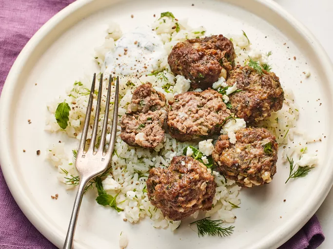

Dill Pickle Meatballs

Description
Pickle fans, get ready to bring big flavor to the dinner table. These Dill Pickle Meatballs are infused with the tangy brine of
dill pickles and pick up tons of flavor from fresh herbs and feta cheese. Paired with the creamy, tzatziki-style sauce, these
pickle-inspired meatballs are a perfectly craveable twist on the classic dish.
Ingredients
- cooking Spray
- 1 pound 80/20 ground beef
- 3/4 cup fine round buttery cracker crumbs (such as Ritz) (from 20 crackers)
- 1/3 cup finely chopped yellow onion
- 1 large egg, beaten
- 1 teaspoon garlic powder
- 1/2 teaspoon freshly ground black pepper, plus more for garnish
- 4 ounces feta cheese crumbled into small pieces, divided
- 1/4 cup drained and finely chopped dill pickles, plus 5 tablespoons . dill pickle juice, divided
- 3/4 cup chopped fresh mixed herbs (such as dill, mint, and flat-leaf parsley), divided, plus more for garnish
- 1 1/4 teaspoon kosher salt, divided
- 1/2 cup plain whole milk yogurt
- 2 cups buttered rice, for serving
Steps
-
Gather all ingredients. Generously spray a large rimmed baking sheet with cooking spray.
-
Add beef, cracker crumbs, onion, egg, garlic powder, black pepper, 1/2 cup feta, chopped dill pickles, 4 tablespoons pickle
juice, 1/2 cup herbs, and 1 teaspoon salt to a large bowl; stir gently using a fork or clean hands until just combined, being
sure not to overwork meat. Cover and chill in the refrigerator for at least 15 minutes or up to 12 hours. The meatballs are
easiest to form when cold.
-
Preheat the oven to 425 degrees F (220 degrees C) with rack in top third position.
-
Roll beef mixture into 24 (about 1 1/4 ounce; 1 tablespoon plus 2 teaspoons) meatballs. Arrange meatballs on the prepared
baking sheet evenly spaced apart.
-
Bake in the preheated oven for 10 minutes. Increase oven temperature to broil, do not remove meatballs from oven. Broil until
tops are browned and meatballs are cooked through, about 6 minutes.
-
While meatballs bake, whisk together yogurt, remaining 1 tablespoon pickle juice, remaining 1/4 cup herbs, and remaining 1/4
teaspoon salt in a small bowl until combined.
-
Divide buttered rice among 4 plates. Top evenly with meatballs and remaining 1/2 cup feta cheese. Serve with yogurt sauce and
garnish with pepper and herbs.